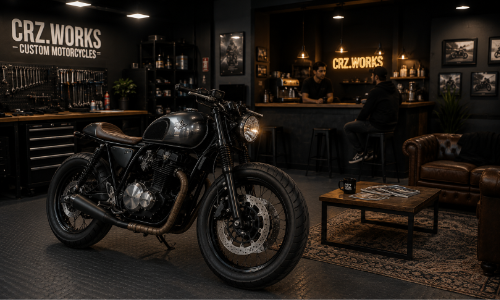

CRZ Works nace del amor por la mecánica y de una pasión por el mundo del motor que va más allá de las motos. Nuestro objetivo es transformar esa pasión en proyectos únicos y dejar nuestra propia huella en el motociclismo. Nos especializamos en motocicletas de alta cilindrada y clásicas, trabajando cada una como un proyecto especial en el que la mecánica, el diseño y la personalidad de su dueño se convierten en una sola pieza.
Nuestra filosofia

El cliente tambien forma parte del proceso
Para nosotros, una moto personalizada no debería ser solamente una máquina modificada, sino la materialización de una idea. Buscamos que cada cliente pueda ver reflejada en su moto aquella máquina que alguna vez imaginó, incluso esa que dibujaba cuando era chico. Creemos también que el proceso forma parte de la experiencia. Por eso, CRZ Works busca ser un espacio donde el cliente pueda acercarse, tomar un café, conocer el avance de su proyecto y sentirse parte de su creación. Nuestro objetivo final es que cada moto que salga del taller sea reconocible por su calidad, atención al detalle e identidad; una pieza capaz de transmitir a simple vista que detrás de ella hubo tanto un especialista como un artista.